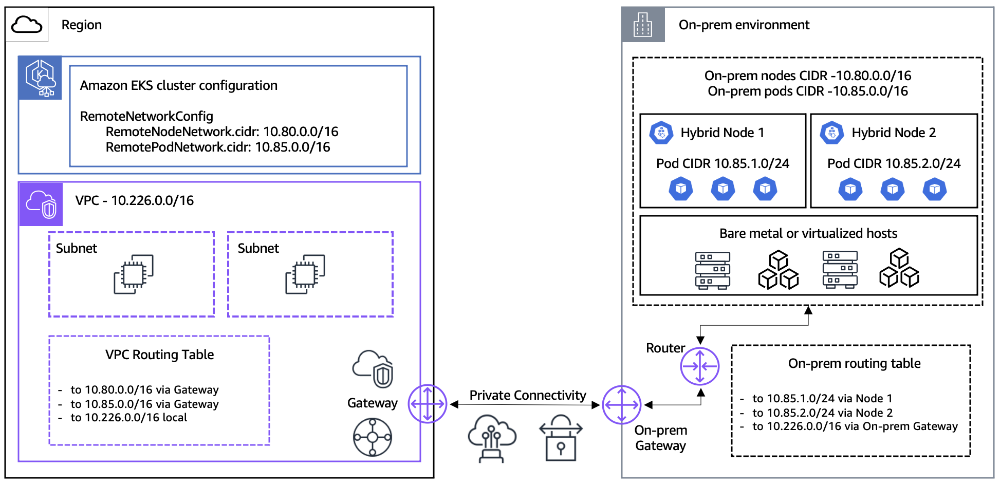

CIDR 설계부터 6가지 트래픽 패턴까지
EKS Hybrid Nodes를 위한 네트워크 아키텍처 요구사항

IP 충돌 없는 하이브리드 네트워크 설계
Kubelet이 API 서버에 연결하는 경로
API Server가 Kubelet에 연결 (port 10250)
Pod가 CoreDNS를 경유하여 API Server에 접근
Admission Webhook 호출 — Routable Pod CIDR 필수
VXLAN 캡슐화를 통한 노드 간 Pod 통신
EC2 Pod와 Hybrid Node Pod 간 Cross-boundary 통신
네트워크 팀과 사전 조율이 필요한 포트 목록
| 포트 | 프로토콜 | 방향 | 용도 |
|---|---|---|---|
| 443 | TCP | On-Prem → AWS | Kubelet → API Server 통신 |
| 10250 | TCP | AWS → On-Prem | API Server → Kubelet (exec, logs, webhooks) |
| 8472 | UDP | 양방향 | Cilium VXLAN 터널링 |
| 4240 | TCP | 양방향 | Cilium Health Check |
| 53 | TCP UDP | 양방향 | CoreDNS 쿼리 |
Private Link를 통한 AWS 서비스 접근
eks.<region>
api.ecr.<region>
<acct>.dkr.ecr.<region>
Gateway Endpoint
sts.<region>
ssm.<region>
logs.<region>
ec2.<region>
네트워킹 핵심 개념 점검
Q1. 온프레미스와 AWS 간 네트워크 연결 권장 방법은?
Q2. Kubelet → API Server 통신에 필수인 방화벽 포트는?
Q3. Pod CIDR 설계 시 고려사항이 아닌 것은?
Q4. EKS Hybrid Nodes 권장 네트워크 지연시간은?